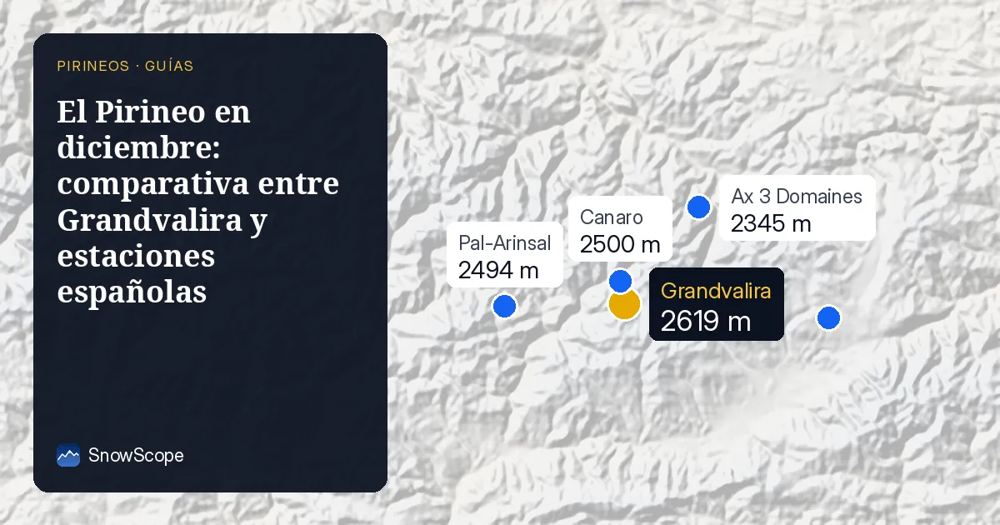
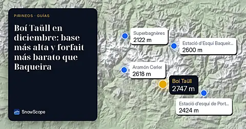

El Pirineo en diciembre: comparativa entre Grandvalira y estaciones españolas
¿Planeas un viaje de esquí al Pirineo en diciembre de 2026? Analizamos los datos de Grandvalira, Baqueira Beret, Astún-Candanchú, Boí Taüll y Cauterets para ver dónde encontrar la mejor nieve y los mejores precios.
Consulta la previsión de nieve en tiempo real de Grandvalira en la app SnowScopeEspesor de nieve, alertas de nieve polvo y mapa 3D, gratis.
El cara a cara
El Pirineo ofrece una mezcla de estaciones de esquí grandes y pequeñas repartidas entre Andorra, España y Francia. Grandvalira tiene 137 km de pistas balizadas y 53 remontes. En el lado español, Baqueira Beret cuenta con 154 km de pistas balizadas y 36 remontes. Astún-Candanchú ofrece 35 km de pistas balizadas, Boí Taüll tiene 35 km de pistas balizadas y Cauterets, en el lado francés, ofrece 25 km de pistas balizadas.
Las cotas de los remontes varían en toda la región. Grandvalira va desde los 1674 m hasta los 2619 m, lo que supone un desnivel de 944 m. Baqueira Beret se sitúa entre los 1504 m y los 2600 m. Astún-Candanchú va desde los 1659 m hasta los 2272 m. Boí Taüll empieza alto, a 2039 m, y llega a los 2747 m. Cauterets va desde los 1725 m hasta los 2420 m.

Nieve: quién gana en diciembre
Nuestro histórico de nieve de los últimos 46 inviernos muestra que a principios de diciembre la base puede ser escasa en todas estas estaciones. En Grandvalira, la base está a 1674 m con un espesor habitual en diciembre de 9 cm y un espesor habitual el 15 de diciembre de 8 cm. Baqueira Beret tiene una base a 1504 m con un espesor habitual en diciembre de 8 cm y 9 cm el 15 de diciembre. Astún-Candanchú tiene un espesor habitual en diciembre de 18 cm en su base de 1659 m, que baja a 13 cm el 15 de diciembre. Boí Taüll tiene una base a 2039 m con un espesor habitual en diciembre de 16 cm y 17 cm el 15 de diciembre. Cauterets tiene una base a 1725 m con un espesor habitual en diciembre de 23 cm y 21 cm el 15 de diciembre.
En cotas más altas, las cifras mejoran. A media montaña, el espesor habitual en diciembre en Grandvalira es de 27 cm, en Baqueira Beret es de 20 cm, en Astún-Candanchú es de 28 cm, en Boí Taüll es de 25 cm y en Cauterets es de 33 cm. En la parte alta de los remontes, Grandvalira alcanza los 45 cm, Baqueira Beret 30 cm, Astún-Candanchú 38 cm, Boí Taüll 34 cm y Cauterets 42 cm. Si observamos la tendencia del espesor a media montaña comparando los primeros 15 inviernos con los últimos 15, Grandvalira pasó de 21 cm a 25 cm, Baqueira Beret de 17 cm a 20 cm, Astún-Candanchú de 29 cm a 23 cm, Boí Taüll de 22 cm a 20 cm y Cauterets de 35 cm a 23 cm.
Precio: quién gana
Los costes consultados en las webs oficiales muestran claras diferencias en los precios de los forfaits de día para la temporada 2026-27. Grandvalira cobra 62,50 EUR por un forfait de adulto de 1 día comprado online para el lunes 14 de diciembre de 2026, y 72,00 EUR en taquilla. Baqueira Beret lista un Baqueira Ticket de adulto de 1 día a 74,00 €, un forfait de 6 días a 359,00 € y un forfait de 1 día con la tarjeta recargable Baqueira Pass a 70,00 €.
Astún-Candanchú cobra 54,50 EUR por un forfait conjunto de adulto de 1 día comprado online y 59,50 EUR en taquilla, con un forfait conjunto de 5 días a 237,00 EUR. Boí Taüll lista un forfait de adulto de 1 día a 49,00 EUR. Cauterets cobra 46 EUR por un forfait de adulto de 1 día a tarifa pública y 276 EUR por el forfait de 6 días.
La regla de finales de diciembre
El porcentaje de inviernos con 30 cm o más a media montaña muestra por qué el momento elegido es importante. En Grandvalira, ese porcentaje pasa del 30 por ciento en la primera semana de diciembre hasta el 65 por ciento entre el 22 y el 28 de diciembre. En Baqueira Beret, pasa del 22 por ciento al 41 por ciento. En Astún-Candanchú, va del 35 por ciento al 63 por ciento. En Boí Taüll, sube del 35 por ciento al 54 por ciento. En Cauterets, va del 43 por ciento al 67 por ciento. Esperar a las últimas semanas ofrece muchas más probabilidades de tener buena cobertura.
Veredicto según el tipo de viaje
Si buscas una zona grande y el espesor habitual de diciembre más alto en la cima de este grupo, 45 cm, Grandvalira es una apuesta segura, especialmente si reservas tu forfait online con antelación. Si prefieres un presupuesto más ajustado en el lado español, Boí Taüll ofrece un forfait de 1 día por 49,00 EUR con una base alta a 2039 m. Para los viajeros que se fijan en Cauterets en Francia, el forfait de 1 día por 46 EUR se combina con un espesor habitual en diciembre en la parte alta de 42 cm.
Consejos para esquiadores
- Reserva tu forfait de Grandvalira online antes de llegar para pagar 62,50 EUR en lugar de los 72,00 EUR del precio en taquilla.
- Elige la semana del 22 al 28 de diciembre para obtener el mayor porcentaje de inviernos con 30 cm o más de nieve a media montaña en todas las estaciones.
- Consulta el boletín de aludes antes de salir fuera de pista en cualquiera de estas zonas.
- Elige estaciones con base más alta, como Boí Taüll a 2039 m, si viajas durante las semanas de escasez de principios de diciembre.
- Utiliza las webs oficiales de las estaciones para verificar las fechas exactas de apertura y el número de remontes activos para diciembre de 2026.
Más mapas (sitios externos)
Referencias y créditos
- Grandvalira, official ski pass booking (online price for 14 December 2026, read 2026-11-13) www.grandvalira.com/en/ski-pass/day
- Baqueira Beret, official prices (tarifas), season 26-27 www.baqueira.es/es/tarifas
- Astún, official lift pass prices (tarifas 26-27) astun.com/forfaits/
- Boí Taüll, official lift pass prices (tarifes) pirineu365.cat/boitaull/estacio/tarifes/
- N'PY, Cauterets official ski pass prices 2026-27 www.n-py.com/fr/cauterets/forfaits-ski
- SnowScope, December snow at three heights and today's snow map snowscope.app/
Sobre estas cifras
Cifras de nieve: histórico de nieve de SnowScope, 46 inviernos pasados (1980-81 a 2025-26) a tres alturas de cada estación (un modelo del pasado corregido por altitud: una estimación para una zona, no mediciones de la estación); cifras de diciembre calculadas con los espesores diarios de esos inviernos. Nieve actual y tendencia a dos semanas: previsiones de SnowScope (tendencia de ECMWF y GFS, un rango, no una promesa). Remontes y pistas: cartografía de OpenSkiMap. Precios: las páginas oficiales de abajo, consultadas el 2026-11-13; los precios pueden cambiar, compruébalos antes de reservar.
Citar este informe
Para investigación, docencia o prensa: cifras y gráficos reutilizables libremente bajo CC BY 4.0 con esta cita.
SnowScope (2026), El Pirineo en diciembre: comparativa entre Grandvalira y estaciones españolas, https://snowscope.app/blog/es/2026/11/andorra-vs-spanish-pyrenees-december-ski-2026.html, consultado el 2026-11-14
SnowScope (Atlas Labs). (2026, November 14). El Pirineo en diciembre: comparativa entre Grandvalira y estaciones españolas. SnowScope snow reports. https://snowscope.app/blog/es/2026/11/andorra-vs-spanish-pyrenees-december-ski-2026.html
BibTeX
@misc{snowscope2026andorravsspanishpyrenees,
author = {{SnowScope (Atlas Labs)}},
title = {El Pirineo en diciembre: comparativa entre Grandvalira y estaciones españolas},
year = {2026},
month = nov,
howpublished = {\url{https://snowscope.app/blog/es/2026/11/andorra-vs-spanish-pyrenees-december-ski-2026.html}},
note = {Published 2026-11-14 15:21 UTC; accessed 2026-11-14}
}· CC BY 4.0 · Métodos, datos y herramientas →
Grandvalira: nieve y temperatura según la altura, este invierno vs el pasado (herramientas) →
Sigue Grandvalira
Gratis: un aviso cuando llega la nieve y la previsión cada mañana.
Más partes de nieve

¿Planeas un viaje en diciembre a Baqueira Beret? Mira nuestro historial de nieve, precios de forfaits desde 70,00 € para un pase de 1 día, y cómo se compara con Astún-Candanchú.

Cauterets ofrece 25 km de pistas por 46 EUR, pero nuestro histórico de nieve muestra que la mejor oportunidad para encontrar cobertura es la última semana de diciembre.

Boí Taüll empieza a 2039 m y supera a Baqueira Beret en el precio del forfait, aunque la nieve de principios de diciembre requiere algo de paciencia.